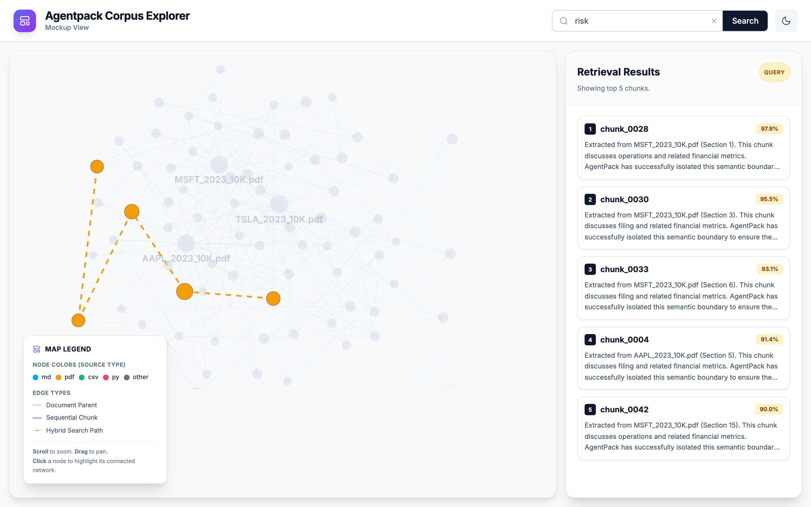

AgentPack


AgentPack improves the context pipeline for document-grounded agents.
Instead of forcing AI agents to parse messy, disparate file formats (PDFs, CSVs, Markdown, text) at runtime, AgentPack is an offline document-to-agent-context compiler. It takes unstructured knowledge bases, turns them into clean semantic chunks with citations, retrieves the right evidence, and sends only high-signal context to the model.
Why AgentPack: across 9 retrieval strategies on 2 corpora, it delivers the most consistent retrieval quality of any method tested — 0.83 Hit@3 on both homogeneous and heterogeneous document sets — while keeping context ~100× smaller than raw document stuffing. See the full benchmark results.
The Benchmark
Given the same LLM, AgentPack provides better context than raw document stuffing or naive RAG.
I benchmarked AgentPack against standard RAG baselines on 42 complex financial queries from Patronus AI FinanceBench. The results prove that AgentPack reduces context bloat, improves evidence retrieval, preserves citations, and helps the exact same LLM produce more grounded answers.
Benchmark Highlights: * 161x Reduction in Token Cost: Cut context token usage from 424k to 2.6k, saving ~$0.10 per query. * Highest Correctness of Any Strategy: AgentPack (Vector) scored 3.95/5 judge-graded correctness on FinanceBench — the top of all 9 retrieval strategies tested. * ~1.7x Context Relevance: Retrieved context graded ~1.7x more relevant than naive chunking (3.14 vs 1.83) by preserving semantically complete financial tables.
AgentPack is best treated as an offline document-to-agent-context compiler. It reduces context bloat, but a strong reasoning model is still required to solve complex queries.
| Signal | What good looks like |
|---|---|
| Token reduction | ~161x reduction (99% smaller) compared to raw document stuffing |
| Context per query | Averages ~2.6k high-signal tokens per retrieval (vs 400k+ for raw files) |
| Context Relevance | ~1.7x more relevant than naive chunking (3.14 vs 1.83); preserves tabular and semantic boundaries |
| Cost Savings | Drops LLM input cost per query from ~$0.11 to <$0.0007 |
| Answer Correctness | Highest judge-graded correctness (3.95/5) of any retrieval strategy tested on FinanceBench |
| The Bottleneck | AgentPack provides the context, but you still need a frontier model to perform the final reasoning |
Use deterministic, LLM-as-a-judge evals instead of trusting raw compression numbers.
Read the full scientific methodology and results in BENCHMARK.md.
Installation
You can install AgentPack via pip or npm. To use the new interactive Corpus Explorer UI, you must install the [ui] extra dependencies.
Option 1: Using pip (Python)
# Core only
pip install agent-context-packager
# With Corpus Explorer UI
pip install "agent-context-packager[ui]"
Option 2: Using npm (Node.js/CLI binary)
npm install -g agent-context-packager
Option 3: From Source
git clone https://github.com/Vedant1202/agentpack.git
cd agentpack
python3 -m venv venv
source venv/bin/activate
pip install -e .
Quick Start
1. Scan for Secrets (Recommended)
Before compiling a pack, ensure you aren't accidentally leaking API keys or secrets into the LLM context window. AgentPack automatically installs Yelp's detect-secrets.
detect-secrets scan > .secrets.baseline
2. Compile a Pack
Point AgentPack at any folder containing your documents (.txt, .md, .csv, .pdf, .docx, .pptx, .xlsx, .html).
agentpack pack ./my_docs --out ./agentpack-output
Key Compilation Options:
- --include "*.md,*.txt": Only pack specific files or extensions.
- --ignore "tests/,drafts/": Exclude specific directories or files.
- --remove-empty-lines: Compress text files to save LLM tokens.
- --no-gitignore: Ignore .gitignore rules and pack everything.
- --fast: Fast mode (PyMuPDF for PDFs; skips Docling). Best for quick iteration on small corpora.
Settings can also be stored in an agentpack.toml file in your input directory:
[pack]
chunk_max_tokens = 800
exclude = ["drafts/", "*.log"]
2b. Pre-build Indexes (optional)
Run this after packing to avoid paying the index-build cost on the first query:
agentpack index ./agentpack-output
3. Retrieve
AgentPack comes with a built-in hybrid search engine (SQLite FTS5 + HNSW vector search, fused with RRF) to test your chunks instantly.
agentpack retrieve ./agentpack-output "eligibility criteria" --top-k 5
# Narrow results with metadata filters
agentpack retrieve ./agentpack-output "revenue" --source "annual_report" --page 12
3. Deterministic Eval
Benchmark AgentPack against naive chunking using our offline evaluation harness.
agentpack eval ./benchmarks/my_dataset
4. Visualize with the Corpus Explorer
If you installed AgentPack with the [ui] extra, you can launch a local 2D force-graph explorer of your compiled chunks. This allows you to visually debug chunk sizes, semantic similarities, and ranked retrieval results.
agentpack ui ./agentpack-output --port 8000

Comprehensive CLI Documentation
AgentPack provides a rich CLI for auditing, validating, and testing your context packs (including Generative QA evaluations).
Supported Parsers
- TXT: Paragraph-aware splitting.
- Markdown: Semantic heading-aware section path tracking.
- CSV: Uses Pandas & Tabulate to convert tabular data into Markdown tables.
- PDF: Docling structured-tree parse (default) — preserves page numbers, sections, and tables. PyMuPDF spatial extraction with
--fast. - DOCX / PPTX / XLSX / HTML: Docling semantic parse — same structured-tree path as PDF.
Architecture Overview
flowchart LR
Docs[Raw Docs] --> Parsers[Parsers]
Parsers --> Chunker[Chunker]
Chunker --> Pack[Context Pack]
Pack --> Agent[LLM Agent]For a deep dive into how AgentPack parses, chunks, and indexes data, see Architecture & Internals.
Current Limitations & Roadmap
- Image Understanding / Vision: OCR and vision models on embedded images are not yet supported. Images are ignored during parsing.
- Complex Nested Tables: Highly merged-cell tables in PDFs may not perfectly reconstruct.
- Web Crawling: Local files only; URL scraping is planned.
- Cloud Vector DB Integration: Retrieval runs locally (SQLite FTS5 + HNSW). Connectors for Pinecone, Weaviate, or Qdrant are planned.
- Cross-Encoder Reranking: A secondary rerank pass is on the roadmap (deferred to v0.4).
Built with ❤️ for Agents.